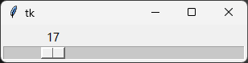
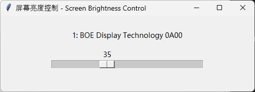
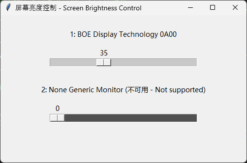

利用python脚本分别调节多个屏幕的亮度 - Set the brightness of multiple screens separately using python scripts
如果Windows电脑同时连接超过一个显示器，通过键盘快捷键就不能调节多个显示屏的亮度了，想要调节的话只能去按外接显示器的物理按钮。
If a Windows computer is connected to more than one monitor, the brightness of multiple displays cannot be adjusted using keyboard shortcuts. To adjust the brightness, you have to use the physical buttons on the external monitors.
如果物理按钮不方便使用，也可以通过python的screen_brightness_control包来调节多个显示器的亮度。
If the physical buttons are inconvenient to use, you can adjust the
brightness of multiple monitors using the Python
screen_brightness_control package.
使用screen_brightness_control包 - Using screen_brightness_control
首先安装screen_brightness_control包：
First, install the screen_brightness_control
package:
1 | pip install screen_brightness_control |
它支持基础的获取屏幕亮度和设置屏幕亮度功能，如下所示。
It supports basic functions for getting and setting screen brightness, as shown below.
1 | import screen_brightness_control as sbc |
这样就可以通过python代码来调节多个显示器的亮度了。
With this, you can adjust the brightness of multiple monitors using Python code.
图形化界面 - Graphical Interface (GUI)
为了更易于非程序员用户使用，可以使用tkinter库来创建一个简单的图形化界面，通过滑动条来调节各个显示器的亮度，如下所示。
To make it easier for non-programmers to use, you can create a simple
graphical interface using the tkinter library, allowing
users to adjust the brightness of each monitor with sliders, as shown
below.
1 | import tkinter as tk |
这样就可以通过图形化界面来调节多个显示器的亮度了。
This allows you to adjust the brightness of multiple monitors using a graphical interface.

稍稍美化一下界面。考虑到有些显示器不支持通过程序来调节亮度，在设置亮度时需添加try-except来捕获异常。最终代码如下所示。
Make the interface slightly more polished. Considering that some monitors do not support brightness adjustment through software, add a try-except block when setting the brightness to catch exceptions. The final code is shown below.
1 | # Control the brightness of the screen using a GUI interface |
其最终效果如图所示：
The final effect:

有多个显示器时的效果如图所示：
The effect with multiple monitors:

编译为可执行文件 - Compile to Executable
为了方便使用，可以将python脚本编译为可执行文件（.exe文件），这样就不需要安装python环境了。使用pyinstaller库可以实现这一功能。
To make it easier to use, you can compile the Python script into an executable file (.exe file) so that a Python environment is not needed. This can be done using the pyinstaller library.
首先安装pyinstaller库：
First, install the pyinstaller library:
1 | pip install pyinstaller |
然后使用以下命令将脚本编译为可执行文件，需将script.py替换为实际的脚本文件名。
Then use the following command to compile the script into an
executable file, replacing script.py with the actual script
file name.
1 | pyinstaller --onefile --noconsole script.py |
编译完成后，会在dist目录下生成一个可执行文件，双击即可运行。
After compilation, an executable file will be generated in the
dist directory, which can be run by double-clicking.